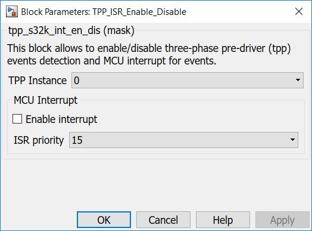

TPP ISR Enable Disable Block
The main functionality of the block is to process TPP ISRs.
Block Image

Inputs:
- None
Outputs:
- Function-Call
Parameters and Dialog Box
The block has three parameter:
Instance
Selects the TPP instance to be used.
Note:Currently limited to only 1 instace (#0).
Enable/Disable interrupt
Enable/Disable interrupt on GPIO pin selected in "TPP config" block, tab "Pins", pin "INT" .
ISR priority
ISR priority - sets the priority of the MCU interrupt (if enabled) else clear interrupt.
Block Dependency
Please do the following:
- Configure the TPP Configuration block.
- Configure the LPSPI Configuration block.